Fuel Line Coupler: Service and Repair
Fuel Line/Quick-Connect Fitting Precautions

The fuel line/quick-connect fittings (A), (B), (C), (D), and (E) connect the fuel rail (F) to the fuel feed hoses (G), fuel feed hose A to fuel feed hose B (H), fuel feed hose B to the fuel line (I), the fuel line (J) to the fuel tank unit (K), the fuel vapor line (L) to the EVAP canister (M) and the fuel tank vapor recirculation tube (N) to the fuel fill pipe (O). When removing or installing the fuel feed hose, the fuel tank unit, or the fuel tank, it is necessary to disconnect or connect the quick-connect fittings. Pay attention to the following:
- The fuel feed hoses, fuel line, and quick-connect fittings are not heat-resistant; be careful not to damage them during welding or other heat-generating procedures.
- The fuel feed hoses, fuel line, and quick-connect fittings are not acid-proof; do not touch them with a shop towel that was used for wiping battery electrolyte. Replace them if they come in contact with electrolyte or something similar.
- When connecting or disconnecting the fuel feed hoses, fuel line, and quick-connect fittings, be careful not to bend or twist them excessively. Replace them if they are damaged.

A disconnected quick-connect fitting can be reconnected, but the retainer on the mating line cannot be reused once it has been removed from the line.
Replace the retainer when:
- replacing the fuel rail.
- replacing the fuel line.
- replacing the fuel pump.
- replacing the fuel filter.
- replacing the fuel gauge sending unit.
- replacing the EVAP purge line.
- replacing the EVAP canister.
- replacing the fuel tank.
- replacing the fuel fill pipe.
- it has been removed from the line.
- it is damaged.
Fuel Line/Quick-Connect Fitting Removal
NOTE: Before you work on the fuel lines and fittings, read the "Fuel Line/Quick-Connect Fitting Precautions".
1. Relieve the fuel pressure.
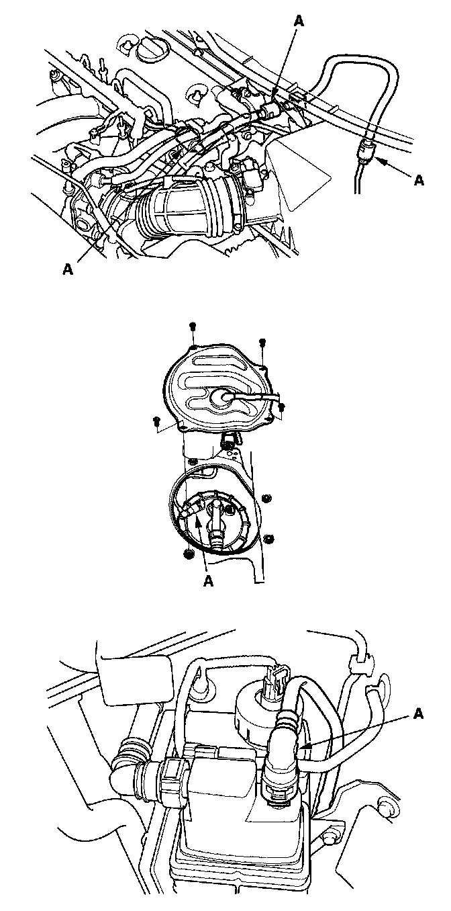
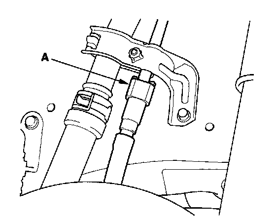
2. Check the fuel quick-connect fittings (A) for dirt, and clean them if needed.
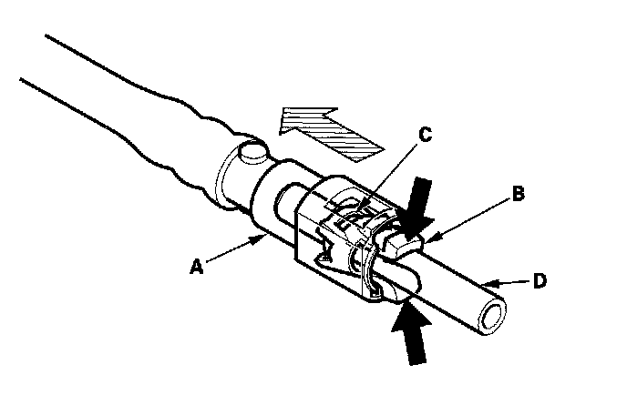
3. Place a rag or shop towel over the quick-connect fitting. Hold the connector (A) with one hand, and squeeze the retainer tabs (B) with the other hand to release them from the locking tabs (C). Pull the connector off.
NOTE:
- Be careful not to damage the line (D) or other parts. Do not use tools.
- If the connector does not move, keep the retainer tabs pressed down, and alternately pull and push the connector until it comes off easily.
- Do not remove the retainer from the line; once removed, the retainer must be replaced with a new one.
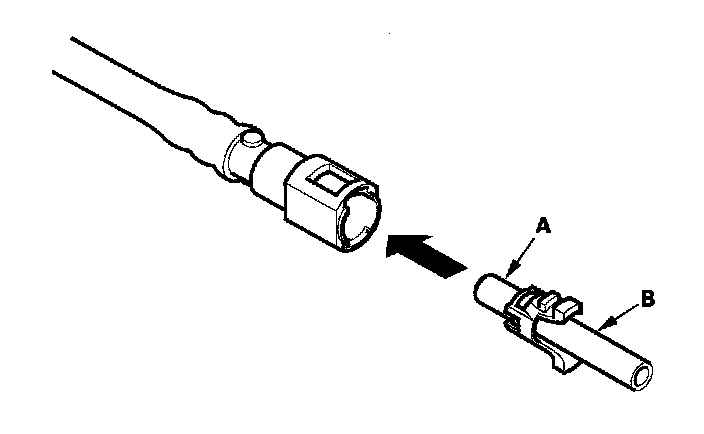
4. Check the contact area (A) of the line (B) for dirt or damage.
- If it is dirty, clean the connector with pressure washer, and dry it with the compressed air.
- If it is rusty or damaged, replace the fuel filter or the fuel feed line.
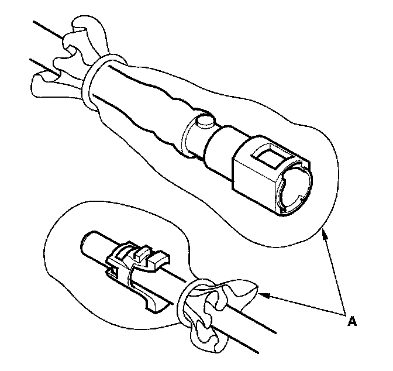
5. To prevent damage and keep foreign matter out, cover the disconnected connector and line ends with plastic bags (A).
NOTE: The retainer cannot be reused once it has been removed from the line.
Replace the retainer when:
- replacing the fuel rail.
- replacing the fuel feed line.
- replacing the fuel pump.
- replacing the fuel filter.
- replacing the fuel gauge sending unit.
- replacing the EVAP purge pipe.
- replacing the EVAP canister.
- replacing the fuel tank.
- replacing the fuel fill pipe.
- it has been removed from the line.
- it is damaged.
Fuel Line/Quick-Connect Fitting Installation
NOTE: Before you work on the fuel lines and fittings, read the "Fuel Line/Quick-Connect Fitting Precautions".
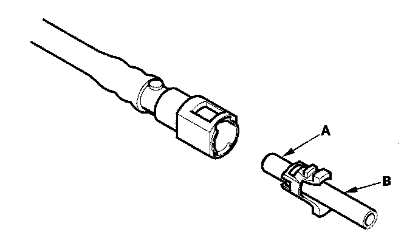
1. Check the contact area (A) of the line (B) for dirt or damage, and clean it if needed.
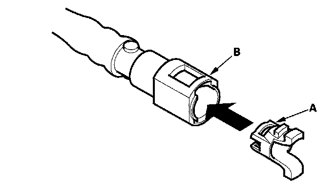
2. Insert a new retainer (A) into the connector (B) if the retainer is damaged, or after:
- replacing the fuel rail.
- replacing the fuel feed line.
- replacing the fuel pump.
- replacing the fuel filter.
- replacing the fuel gauge sending unit.
- replacing the EVAP purge pipe.
- replacing the EVAP canister.
- replacing the fuel tank.
- replacing the fuel fill pipe.
- removing the retainer from the line.
- Use the same manufacturer retainer and the same size retainer when the replacing the retainer.
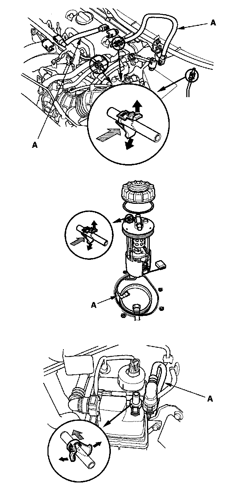
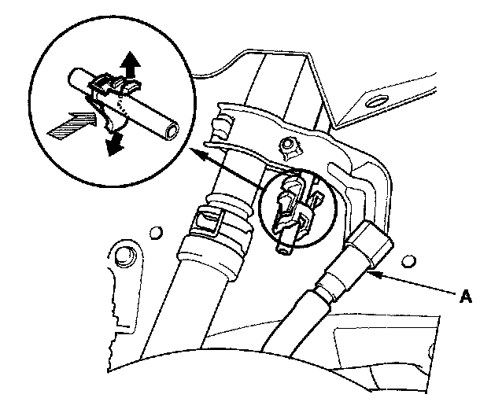
3. Before connecting a new fuel tube/quick-connect fitting assembly (A), remove the old retainer from the mating line.
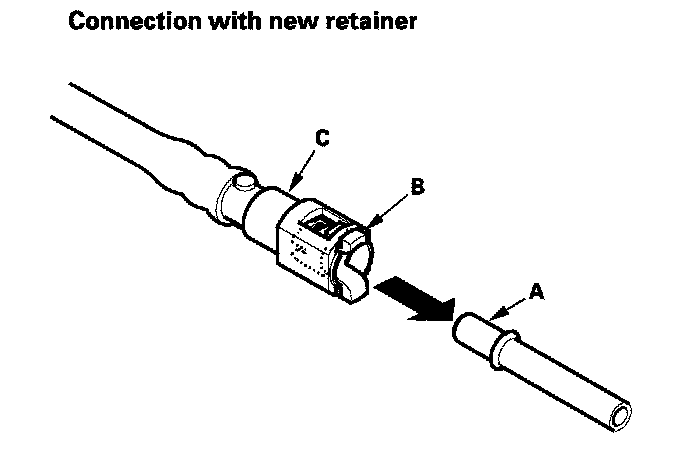
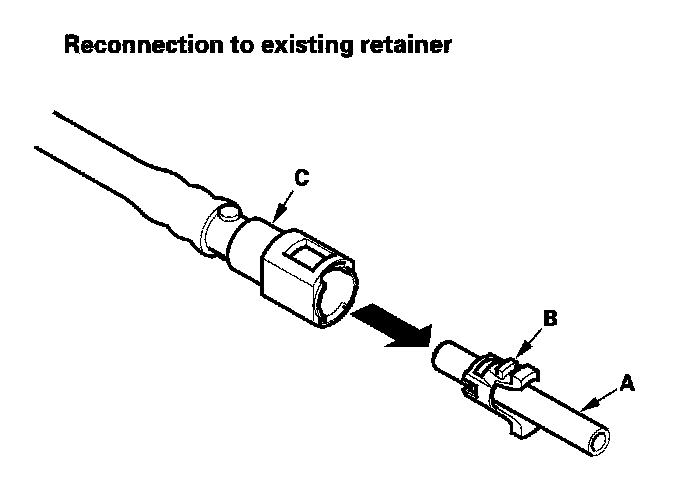
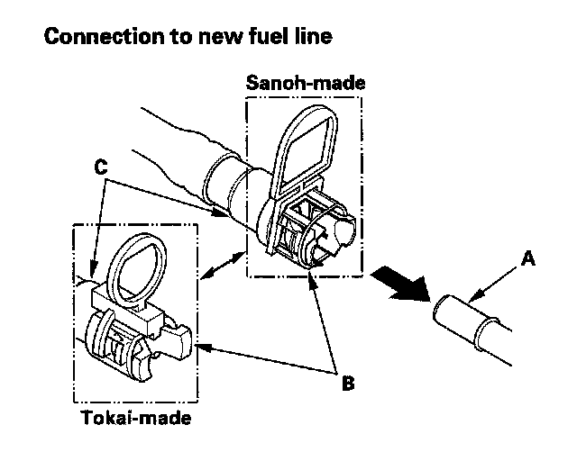
4. Align the quick-connect fittings with the line (A), and align the retainer locking tabs (B) with the connector grooves (C). Then press the quick connect fittings onto the line until both retainer tabs lock with a clicking sound.
NOTE: If it is hard to connect, put a small amount of new engine oil on the line end.
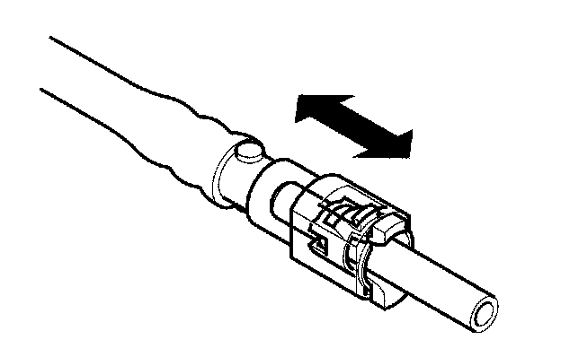
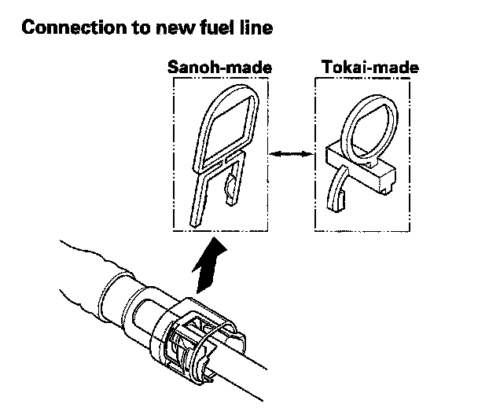
5. When you reconnect the connector with the old retainer, make sure the connection is secure and the tabs are firmly locked into place; check visually and also by pulling the connector. When you replace the fuel line with a new one, make sure you remove the ring pull upwards after you confirm the connection is secure.
NOTE: Before you remove the ring pull, make sure the fuel line connection is secure. If the connection is not secure, the ring pull could break when you try to remove it.
6. Reconnect the negative cable to the battery, and turn the ignition switch ON (II) (but do not operate the starter motor). The fuel pump will run for about 2 seconds, and fuel pressure will rise. Repeat this two or three times, and check that there is no leakage in the fuel supply system.